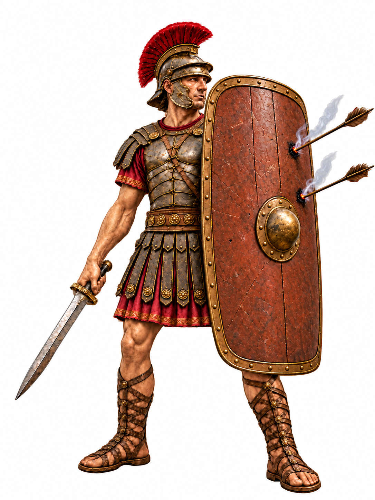

O boji duchovním – první kapitola

„Dále, bratři, posilte se v Bohu a v moci jeho síly. Oblečte se do Boží zbroje, abyste mohli obstát proti Ďáblovým úkladům.1 Vždyť váš boj není proti tělu a krvi, ale proti knížatům a mocnostem, proti vládcům temnot tohoto světa, proti duchovním mocnostem zla v nebesích. Proto přijměte Boží zbroj, abyste ve zlý den mohli ve všem plně obstát. Proto stůjte, opásejte svá bedra pravdou, oblečte si pancíř spravedlnosti a nohy mějte obuté připraveností k evangeliu pokoje. K tomu všemu vezměte štít víry, jímž budete moci uhasit všechny ohnivé šípy toho zlého. Přijměte také přilbu spasení a meč ducha, jímž je Boží slovo. V každém čase se v duchu modlete všemi druhy modliteb i proseb a přitom bděte s veškerou vytrvalostí. Modlete se také za to, aby mi byla dána řeč, kdykoli otevřu ústa, abych směle oznamoval tajemství evangelia, pro něž jsem poslem v těchto řetězech, a abych o něm mohl v Kristu mluvit tak, jak mám.“2
Svatý Pavel, věrný Kristův posel a milovník lidských duší, předložil v této řeči Božímu lidu věrné a pravé poučení o duchovním boji. Do tohoto boje byli povoláni proto, aby v něm zvítězili a přijali korunu věčného života.3 Podle Písma jsou k boji povoláni i zavázáni. Vždyť je psáno: „Život člověka na zemi je boj.“4 Také jiné místo Písma vybízí k tomuto boji všechny Boží syny slovy: „Synu, když přistoupíš ke službě Bohu, stůj v bázni a spravedlnosti a připrav svou duši na zkoušky!“5 A k tomu se hned pojí odměna, kterou Bůh slíbil. Jak říká svatý Jakub: „Šťastný je člověk, který snáší zkoušku; když se v ní osvědčí, přijme korunu života, kterou Bůh slíbil těm, kdo ho milují.“6
K tomuto boji apoštol vybízí a vede ty, kdo jsou k němu povoláni. Nejprve je napomíná, aby se posílili v Bohu a v moci jeho síly. Člověk je totiž slabý, bezmocný a nerozumný, a přitom má v takovém boji opravdu obstát podle Boží vůle. Proti sobě má násilné, četné, ustavičné a neznámé nepřátelství.7 Jeho vlastní síla proto nestačí, aby v sobě zachoval Boží vůli, protože je ze všech stran obklíčen takovým násilným bezprávím.8 Takové nepřátelství proto sám od sebe nemůže přemoci, nebude-li mít shůry posílení od svrchované Boží moci.9 Právě proto Kristův apoštol naléhá na křesťany, povolané do tohoto těžkého boje, aby se posílili v Bohu a v moci jeho síly. Neboť jeho moc a síla převyšují veškerou moc i sílu na nebi i na zemi a žádná moc se nemůže postavit proti jeho moci.10
Také jeho milosrdenství k člověku je nesmírné a je nade všemi jeho skutky; slitovává se nad člověkem tak porobeným a obtíženým takovým bezprávím.11 Proto apoštol těmto lidem přikazuje, aby se posílili v Bohu, zcela se na něj spolehli a všechnu svou naději vložili v jeho milosrdenství a v jeho nepřemožitelnou sílu. Činí tak proto, aby každý, kdo vnímá svou slabost a nápor těžkých pokušení, neztratil odvahu proti nim bojovat, ale hledal svou sílu v Bohu a doufal v jeho milosrdenství. Bůh totiž pro své milosrdenství neopustí v nouzi člověka, který v něho doufá a volá k němu, protože chce a může prokázat dobro tomu, kdo doufá v jeho sílu.12
Člověk se má také o to víc posilovat v Bohu, když hledí na dávné svaté13, kteří byli od počátku světa v těžkých zkouškách, a vidí, jak se spolehli na jeho milosrdenství a na jeho silnou moc. A o cokoli se pokusili, všechno přemohli v jeho síle. Nemohla je přemoci ani síla tohoto světa, ani síla ďábelská, ani žádné rozkoše, protože v sobě měli Boží moc a sílu, doufali v něho a ve všem ho žádali o pomoc.14
Proto prorok říká: „I kdyby se proti mně utábořila vojska a povstal proti mně boj, mé srdce se nebude bát.“15 A opět jinde říká: „V tobě budu vysvobozen z pokušení a ve svém Bohu přelezu zeď.“16 To znamená: Budu moci přemoci veliké nesnáze a ve všem obstát. Apoštol říká: „Všechno je možné tomu, kdo věří.“17 Ale právě proto, že naděje člověka v Boha bývá takto sužována, napomíná zde apoštol slabé lidi, aby se posílili v Bohu všeho milosrdenství a v Bohu, nejsilnějším bojovníku.18
Líní lidé však nedbají na to, aby z něho přijímali duchovní sílu, a raději hynou v pokušení – jako člověk, který umírá hlady, protože nechce otevřít ústa, přijmout pokrm a posílit se.19 Vždyť právě proto nám milosrdný Bůh dal sám sebe za pokrm a nápoj, abychom z něho přijímali duchovní sílu.20 Proto řekl: „Já jsem život,“21 abychom my, duchovně mrtví, přijímali z něho všechno potřebné i svou sílu – pokud neochabneme v tom, abychom tuto sílu z něho přijímali, a pokud nás nevěra nespoutá a neumenší ho v našem srdci natolik, že budeme více spoléhat na sílu smrtelného člověka než na Boží moc, více věřit svému groši než jeho moci a více svým falešným domněnkám bez pravdy než jeho slibům.
A kvůli této nevěře se nám v srdci umenší jeho moc, jeho milosrdenství i jeho sliby natolik, že z něho nemůžeme do sebe přijmout žádnou sílu. Proto se jako třtina ve větru zmítáme sem a tam: jsme plní pokušení, strachu z mnoha věcí, nestálosti a váhání, takže nedokážeme v ničem věrně obstát. Už lehké slůvko nás ohne, rozruší a zdrtí jako dutou třtinu, takže se naše zakalené a zraněné srdce dlouho neupokojí ani po tak nepatrném protivenství.22
To všechno je proto, že z něho nepřijímáme duchovní sílu modlitbou, připomínáním si jeho dobrodiní a budoucí odměny, která nám byla slíbena. Právě tudy do nás přichází síla z Boha, když ve víře rozjímáme o jeho milosrdenství, jeho skutcích, jeho slibech a o odměně, kterou máme přijmout.23 Tudy do nás přijde jeho dosud nepoznaná síla, takže nám bude milé snášet soužení a naše námaha bude spojena s hojnou odměnou v nebi.24
Jestliže se však takto neposilujeme v Bohu, zkoušky nás stále natolik tísní, že nám jde jen o to, jak jim uniknout. A čím více se jim takto nepoctivě vyhýbáme, tím více jich máme; čím více jich na nás přichází, tím více nás jejich oheň stravuje.25 Kdybychom však vůbec nic dobrého neznali a byli mrtví, mnohé zkoušky bychom ani necítili a nerozrušovaly by nás.26 Takto však už těžkým a mnohým zkouškám neutečeme, neboť jsme je skrze víru poznali. Nebudeme-li mít sílu z Boha, abychom se jim postavili, o to bídněji strávíme svůj život v jejich žáru, beze vší naděje, v nevěře, která je lidem neznámá, ale Bohu velmi protivná.
Apoštol zde však nepřikazuje jen posílit se v Bohu, ale také vzít na sebe Boží zbroj. V ní mají být chráněni ti, kdo podstupují těžké boje. Je však třeba vzít vážně, že apoštol říká „Boží zbroj“, nikoli „zbroj tohoto světa“.27 Apoštol totiž znovu ukazuje, že k duchovnímu boji se nehodí tělesná zbroj, nýbrž duchovní, když říká: „Někteří lidé o nás mluví, jako bychom chodili podle těla. Ačkoli žijeme v těle, nebojujeme podle těla. Zbraně našeho boje nejsou tělesné, ale mají od Boha moc bořit pevnosti: boří záměry i každou povýšenost, která se pozvedá proti poznání Boha, a každou myšlenku přivádějí do zajetí ke službě Kristu.“28
V této řeči apoštol zřetelně ukazuje, že křesťané mají vést duchovní boj a mít k němu i zbroj. Neboť lze vpravdě říci, že se lidé oblékají do tělesné zbroje tehdy, když se jim nedostává duchovní zbroje. Když totiž ztratí pravdu a Ďábel má nad nimi moc, nemají pokoj: upadají do sváru a bojů jedni proti druhým a snaží se jeden druhého přemoci pomocí tělesné zbroje a zbraní. Ale i se svou zbrojí jsou zahanbeni. Neboť David vyznává, že Bůh ty, které za starého zákona poslal do boje, nevysvobozoval mečem ani kopím; vítězili vírou a modlitbou.29
Nám křesťanům však apoštol nyní zřetelně říká, že zbraně našeho boje nejsou tělesné jako zbraně jiných lidí, ale mají moc z Boha. Máme Boží moudrost a sílu svatého ducha, abychom poznali Satanovu povýšenost: jak svou lstivostí svádí lidi a všude vzbuzuje násilí proti věrným.30 Proto mají křesťané mít na sobě Boží zbroj,31 aby v tomto boji zvítězili silou svatého ducha, Boží moudrostí i další duchovní výzbrojí, kterou apoštol potom zřetelně jmenuje.32
Apoštol tedy nepřikazuje vzít na sebe duchovní zbroj proto, aby se člověk mohl postavit proti člověku. Vždyť i kdyby někdo v tělesné zbroji přemohl sobě rovného člověka a usmrtil ho, nestane se tím spravedlivým ani nevinným a ze svého vítězství nebude mít pokoj. Ale kdo se obleče do Boží zbroje a postaví se proti Ďáblovým úkladům, ten zvítězí ke spáse, zachová si nevinnost a Boží Syn mu dá usednout s ním na svém trůnu a obdaří ho duchovní útěchou.33
Proto je nanejvýš potřebné obléci se do Boží zbroje a postavit se proti Ďáblovým úkladům. Apoštol přikazuje mít pokoj s lidmi, kteří jsou člověku dáni; proti lstivému Ďáblu však přikazuje obléci se do Boží zbroje, postavit se proti němu a vytrvale bojovat. Neboť i kdyby byl někdo přemožen na těle, lidský nepřítel tím jeho věčnému životu neuškodí. Kdo však zanedbá boj s Ďáblem a nedosáhne nad ním vítězství, ten už ztratil pravdu i věčný život, pokud se v boji nenapraví.
Proto apoštol neučí tělesným bojům, které lidé prolévající krev sami dovedou vést kvůli sváru a v nichž lidské duše hynou k zatracení. Učí naopak takovým bojům, v nichž se duše zachovávají v pravdě a jsou uchráněny od zatracení. Nemá tedy tolik na mysli obranu a bezpečí těla kvůli zachování zdraví časného života. Člověk totiž stejně musí nějakou smrtí zemřít; nikdo se jí neuchrání ani ji od sebe bojem neoddálí, ale spíše do ní skrze boj upadne. Proto se apoštol pečlivě stará o zdraví věrných duší a přikazuje jim, aby na sebe vzaly Boží zbroj a postavily se proti smrtelnému nepříteli, aby nezahubil tyto drahé duše vykoupené Kristovou krví.
Dále apoštol ukazuje obtížnost tohoto boje, když říká:
Potom apoštol pokračuje výkladem o boji:
Další vybrané myšlenky najdete v přehledu citátů z traktátů Petra Chelčického.
Máte postřeh k textu?
Zaujala vás některá myšlenka, narazili jste na nejasnost nebo chcete k textu něco doplnit? Budu rád za vaši zprávu.
Biblické odkazy a vysvětlivky
Poznámka: Slovo Ďábel se v tomto převodu píše s velkým počátečním písmenem tam, kde označuje konkrétní duchovní bytost. Označení má význam „pomlouvač“. Nejde zde tedy jen o obecné označení pomlouvače nebo zla, ale o osobní bytost vystupující v biblickém a křesťanském pojetí.
↩ 1
[2] Ef 6,10–20
„A tak, bratří, svou sílu hledejte u Pána, v jeho veliké moci. Oblečte plnou Boží zbroj, abyste mohli odolat ďáblovým svodům. Nevedeme svůj boj proti lidským nepřátelům, ale proti mocnostem, silám a všemu, co ovládá tento věk tmy, proti nadzemským duchům zla. Proto vezměte na sebe plnou Boží zbroj, abyste se mohli v den zlý postavit na odpor, všechno překonat a obstát. Stůjte tedy ‚opásáni kolem beder pravdou, obrněni pancířem spravedlnosti, obuti k pohotové službě evangeliu pokoje‘ a vždycky se štítem víry, jímž byste uhasili všechny ohnivé střely toho Zlého. Přijměte také ‚přilbu spasení‘ a ‚meč Ducha, jímž je slovo Boží‘. V každý čas se v Duchu svatém modlete a proste, bděte na modlitbách a vytrvale se přimlouvejte za všechny bratry i za mne, aby mi bylo dáno pravé slovo, kdykoliv promluvím. Tak budu moci směle oznamovat tajemství evangelia, jehož jsem vyslancem i v okovech, a svobodně je zvěstovat, jak je mi uloženo.“
↩ 2
[3] Srov. Zj 2,10b; 2 Tm 4,8
„Buď věrný až na smrt, a dám ti vítězný věnec života.“
„Nyní je pro mne připraven vavřín spravedlnosti, který mi dá v onen den Pán, ten spravedlivý soudce. A nejen mně, nýbrž všem, kdo s láskou vyhlížejí jeho příchod.“
↩ 3
[5] Sír 2,1
„Synu, přicházíš-li sloužit Hospodinu, připrav svou duši na pokušení.“
Poznámka: Chelčický zde cituje z knihy Sírachovec, která bývá řazena mezi deuterokanonické knihy Starého zákona; v některých tradicích však není pokládána za součást kánonu inspirovaných biblických knih.
Poznámka: Slovo Hospodin je zde ponecháno podle Českého ekumenického překladu. Dochované řecké znění tohoto verše užívá označení Pán Bůh; samotná česká podoba proto nedokládá, že zde bylo nahrazeno jméno JHWH.
Ke slovu Hospodin viz společná vysvětlivka.
↩ 5
[6] Jk 1,12
„Blahoslavený člověk, který obstojí ve zkoušce; když se osvědčí, dostane vavřín života, jejž Pán zaslíbil těm, kdo ho milují.“
↩ 6
[7] Srov. Ž 22,13–14.17; 40,13a
„Množství býků mě kruhem svírá, bášanští tuři mě obstoupili. Rozevírají na mě tlamu jak řvoucí lev, když trhá kořist. […] Smečka psů mě kruhem svírá, zlovolná tlupa mě obkličuje; sápou se jako lev na mé ruce a nohy,“
„Tolik zla mě obklopilo, že mu není počtu.“
↩ 7
[9] Srov. Iz 57,15
„Toto praví Vznešený a Vyvýšený, jehož přebývání je věčné, jehož jméno je Svatý: ‚Přebývám ve vyvýšenosti a svatosti, ale i s tím, jenž je zdeptaný a poníženého ducha, abych oživil ducha ponížených, abych oživil srdce zdeptaných.‘“
↩ 9
[10] Srov. Iz 40,28–31
„Cožpak nevíš? Cožpak jsi neslyšel? Hospodin, Bůh věčný, stvořitel končin země, není zemdlený, není znavený, jeho rozumnost vystihnout nelze. On dává zemdlenému sílu a dostatek odvahy bezmocnému. Mladíci jsou zemdlení a unavení, jinoši se potácejí, klopýtají. Ale ti, kdo skládají naději v Hospodina, nabývají nové síly; vznášejí se jak orlové, běží bez únavy, jdou bez umdlení.“
Ke slovu Hospodin viz společná vysvětlivka.
↩ 10
[11] Srov. Lk 1,49b–50; 2 K 1,3
„Svaté jest jeho jméno a milosrdenství jeho od pokolení do pokolení k těm, kdo se ho bojí.“
„Pochválen buď Bůh a Otec našeho Pána Ježíše Krista, Otec milosrdenství a Bůh veškeré útěchy!“
↩ 11
Poznámka: Výraz „dávní svatí“ označuje věrné Boží služebníky z předkřesťanské doby. Některé z nich uvádí jako příklady víry 11. kapitola listu Židům. Srov. Žd 11.
↩ 13
[14] Srov. Žd 11,2.39–40
„K takové víře předků se Bůh přiznal svým svědectvím. […] A ti všichni, ačkoliv osvědčili svou víru, nedočkali se splnění toho, co bylo zaslíbeno, neboť Bůh, který zamýšlel pro nás něco lepšího, nechtěl, aby dosáhli cíle bez nás.“
↩ 14
[15] Ž 27,3
„Kdyby se proti mně položilo vojsko, mé srdce nepocítí bázeň, kdyby proti mně i bitva vzplála, přece budu doufat.“
Poznámka: Jde o Davidův žalm (viz jeho nadpis v Ž 27,1).
↩ 15
[17] Mk 9,23
„Ježíš mu řekl: ‚Můžeš-li! Všechno je možné tomu, kdo věří.‘“
Poznámka: Výrok, který Chelčický připisuje apoštolovi, je v evangeliu uveden jako Ježíšova slova.
↩ 17
[18] Srov. 2 K 1,3; Lk 1,49b–50; Ex 15,3; Dt 20,4; Ž 145,8
„Pochválen buď Bůh a Otec našeho Pána Ježíše Krista, Otec milosrdenství a Bůh veškeré útěchy!“
„Svaté jest jeho jméno a milosrdenství jeho od pokolení do pokolení k těm, kdo se ho bojí.“
„Hospodin je bojovný rek; Hospodin je jeho jméno.“
„Vždyť Hospodin, váš Bůh, jde s vámi, aby za vás bojoval s vašimi nepřáteli a zachránil vás.“
„Hospodin je milostivý, plný slitování, shovívavý a nesmírně milosrdný.“
Ke slovu Hospodin viz společná vysvětlivka.
↩ 18
[20] Srov. J 3,16; 6,53–57; 1 K 11,23b–25
Poznámka: Citovaná místa spojují život s Kristem a připomínají Ježíšova slova o jeho těle a krvi jako pokrmu a nápoji.
„Neboť Bůh tak miloval svět, že dal svého jediného Syna, aby žádný, kdo v něho věří, nezahynul, ale měl život věčný.“
„Ježíš jim řekl: ‚Amen, amen, pravím vám, nebudete-li jíst tělo Syna člověka a pít jeho krev, nebudete mít v sobě život. Kdo jí mé tělo a pije mou krev, má život věčný a já ho vzkřísím v poslední den. Neboť mé tělo je pravý pokrm a má krev pravý nápoj. Kdo jí mé tělo a pije mou krev, zůstává ve mně a já v něm. Jako mne poslal živý Otec a já mám život z Otce, tak i ten, kdo mne jí, bude mít život ze mne.‘“
„Pán Ježíš v tu noc, kdy byl zrazen, vzal chléb, vzdal díky, lámal jej a řekl: ‚Toto jest mé tělo, které se za vás vydává; to čiňte na mou památku.‘ Stejně vzal po večeři i kalich a řekl: ‚Tento kalich je nová smlouva, zpečetěná mou krví; to čiňte, kdykoli budete píti, na mou památku.‘“
↩ 20
[23] Srov. Ř 15,4
„Všecko, co je tam psáno, bylo napsáno k našemu poučení, abychom z trpělivosti a z povzbuzení, které nám dává Písmo, čerpali naději.“
↩ 23
[24] Srov. Mt 5,12a; Žd 11,6
„Radujte se a jásejte, protože máte hojnou odměnu v nebesích;“
„Bez víry však není možné zalíbit se Bohu. Kdo k němu přistupuje, musí věřit, že Bůh jest a že se odměňuje těm, kdo ho hledají.“
↩ 24
[25] Srov. Př 29,25
„Kdo se třese před lidmi, ten klade sobě léčku, kdo však doufá v Hospodina, má v něm svůj hrad.“
Ke slovu Hospodin viz společná vysvětlivka.
↩ 25
[26] Srov. Ef 2,1–2.5a
„I vy jste byli mrtvi pro své viny a hříchy, v nichž jste dříve žili podle běhu tohoto světa, poslušni vládce nadzemských mocí, ducha, působícího dosud v těch, kteří vzdorují Bohu. […] probudil nás k životu spolu s Kristem, když jsme byli mrtvi pro své hříchy.“
↩ 26
[27] Srov. 2 K 10,4a
„Zbraně našeho boje nejsou světské, nýbrž mají od Boha sílu bořit hradby.“
↩ 27
[28] 2 K 10,2–5
„Prosím vás, nenuťte mne, až přijdu, jednat s tou troufalostí, na kterou mám podle svého přesvědčení právo, a to vůči těm, kteří nám připisují záměry jen lidské. Jsme ovšem jenom lidé, ale svůj zápas nevedeme po lidsku. Zbraně našeho boje nejsou světské, nýbrž mají od Boha sílu bořit hradby. Jimi boříme lidské výmysly a všecko, co se v pýše pozvedá proti poznání Boha. Uvádíme do poddanství každou mysl, aby byla poslušna Krista,“
↩ 28
[29] Srov. Sd 4,3.15–16; 1 S 17,45–47; 2 Kr 19,20.35–36; 2 Pa 20,4–6.20.24–25
„I úpěli Izraelci k Hospodinu, protože Jabín měl devět set železných vozů a po dvacet let Izraelce krutě utlačoval. […] Hospodin ostřím meče uvedl ve zmatek Síseru a všechnu jeho vozbu a celý tábor před Bárakem. Sísera seskočil z vozu a prchal pěšky. Bárak pronásledoval vozbu a tábor až k Charóšetu pronárodů. Celý Síserův tábor padl ostřím meče, nezůstal ani jediný.“
„Ale David Pelištejci odpověděl: ‚Ty jdeš proti mně s mečem, kopím a oštěpem, já však jdu proti tobě ve jménu Hospodina zástupů, Boha izraelských řad, kterého jsi potupil. Ještě dnes mi tě Hospodin vydá do rukou. Zabiji tě a srazím ti hlavu. Ještě dnes vydám mrtvoly z pelištejského tábora nebeskému ptactvu a zemské zvěři. Celý svět pozná, že při Izraeli stojí Bůh. A celé toto shromáždění pozná, že Hospodin nezachraňuje mečem a kopím. Vždyť boj je Hospodinův. On vás vydá do našich rukou.‘“
„I vzkázal Izajáš, syn Amósův, Chizkijášovi: ‚Toto praví Hospodin, Bůh Izraele: Slyšel jsem, když ses ke mně modlil kvůli Sancheríbovi, králi asyrskému.‘ […] Stalo se pak té noci, že vyšel Hospodinův anděl a pobil v asyrském táboře sto osmdesát pět tisíc. Za časného jitra, hle, všichni byli mrtví, všude mrtvá těla. Sancheríb, král asyrský, odtáhl pryč a vrátil se do Ninive a usadil se tam.“
„Judejci se shromáždili, aby hledali pomoc od Hospodina. Také ze všech judských měst přišli hledat Hospodina. Jóšafat stanul ve shromáždění Judejců a obyvatel Jeruzaléma v Hospodinově domě před novým nádvořím a řekl: ‚Hospodine, Bože našich otců, cožpak nejsi ty Bůh na nebi, který vládne nade všemi královstvími pronárodů? Máš v rukou moc a bohatýrskou sílu, nikdo se ti nemůže zpěčovat.‘ […] Za časného jitra vytáhli na tekójskou poušť. Když vycházeli, Jóšafat se postavil a řekl: ‚Slyšte mě, Judejci i obyvatelé Jeruzaléma! Věřte v Hospodina, svého Boha, a budete nepohnutelní; věřte jeho prorokům a bude vás provázet zdar.‘ […] Když vstoupili Judejci na výšinu s výhledem na poušť a obrátili se směrem k tomu shluku, spatřili jen mrtvá těla ležící na zemi; nikdo nevyvázl. Pak přišel Jóšafat a jeho lid posbírat kořist. Našli tam u mrtvých těl množství majetku a vzácné výzbroje; získali pro sebe tolik, že to nemohli unést. Kořist sbírali tři dny, tak byla hojná.“
Ke slovu Hospodin viz společná vysvětlivka.
↩ 29
Poznámka: Jméno Satan se v tomto převodu píše s velkým počátečním písmenem tam, kde
označuje konkrétního hlavního duchovního protivníka Boha. Samo jméno nese
význam „protivník“ či „odpůrce“, zde však nejde jen o obecné označení
protivníka nebo zla, ale o osobní duchovní bytost vystupující v biblickém a křesťanském pojetí.
↩ 30
[31] Srov. Ř 13,12
„Noc pokročila, den se přiblížil. Odložme proto skutky tmy a oblečme se ve zbroj světla.“
↩ 31